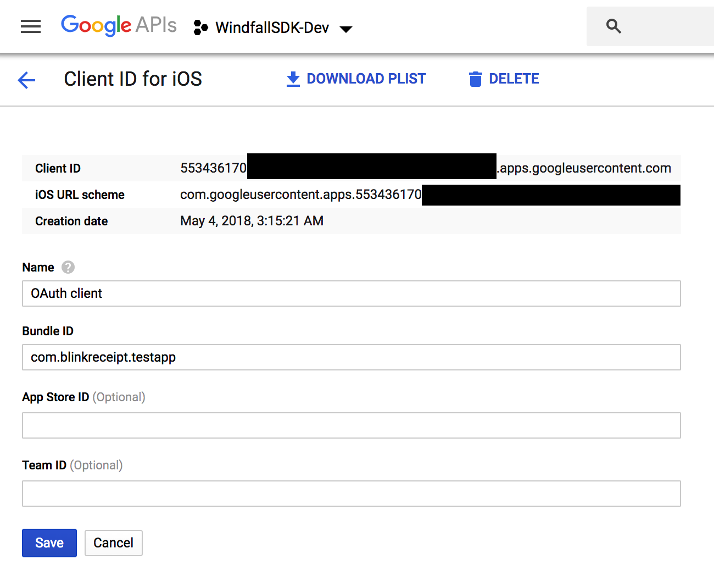
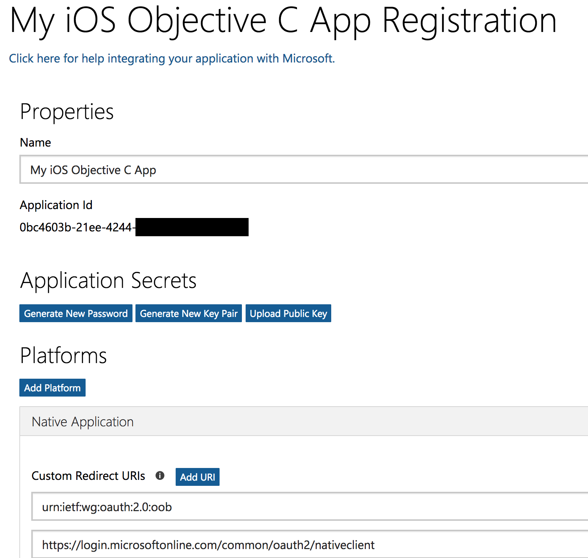

View on GitHub
View on GitHub E-Receipt Parsing Reference
E-Receipt Parsing Reference
E-Receipt Parsing
The BlinkReceipt SDK supports parsing e-receipts from a growing list of retailers and a specific set of mail providers: Gmail, Outlook, Yahoo, and AOL. The procedure for integrating each of these providers is slightly different. This guide will outline the steps necessary to integrate and authenticate a user account for each mail provider, and then the common methods that you will use to invoke the e-receipt parsing functionality.
Gmail
Create a new Project in the Google API Console
Enable the Gmail API for your project
Create new credentials for the API, and choose the iOS option. This should lead you through the process to create an OAuth 2.0 client ID. You will have to complete the setup of an OAuth Consent Screen.
Once you have successfully completed the process, find the Client ID for your app’s bundle identifier

Provide this Client ID via the
BREReceiptManager.googleClientIdpropertyGmail uses OAuth to authenticate user accounts via a modal view controller provided by Google’s SDK. Here is how you invoke it from within your own view controller:
[[BREReceiptManager shared] beginOAuthForProvider:BREReceiptProviderGmail
withViewController:self
andCompletion:^(NSError *error) {
if (error == nil) {
//Account successfully authenticated
} else {
//Failed to authenticate
}
}];
- In order to handle the response from the OAuth process, you need to add the following to your app delegate:
#import <BlinkEReceipt/BREReceiptManager.h>
...
- (BOOL)application:(UIApplication *)app
openURL:(NSURL *)url
options:(NSDictionary *)options
{
return [[BREReceiptManager shared] openURL:url
options:options
provider:BREReceiptProviderGmail];
}
- Lastly, follow Google’s instructions to add the necessary URL scheme to your app
Outlook
Go to the Azure Portal, choose Manage Azure Active Directory, then App Registrations from the left menu, and click New Registration.
Enter a name for your app, choose the option to support accounts in any Azure AD directory as well as personal Microsoft accounts, and choose “Public client/native” for the Redirect URI type. Don’t worry about the field value. Click Register.
This will generate an Application (client) ID which you should note for later.

Now click “Add a Redirect URI” on the right side
Click “Add a Platform” and choose “iOS / MacOS”
Enter your app’s bundle ID and click “Configure” and then click “Done”
In your code, set the Client ID into the
BREReceiptManager.outlookClientIdpropertyOutlook uses OAuth to authenticate user accounts via a modal view controller provided by Microsoft’s SDK. Here is how you invoke it from within your own view controller:
[[BREReceiptManager shared] beginOAuthForProvider:BREReceiptProviderOutlook
withViewController:self
andCompletion:^(NSError *error) {
if (error == nil) {
//Account successfully authenticated
} else {
//Failed to authenticate
}
}];
- Add the following to your app delegate:
#import <BlinkEReceipt/BREReceiptManager.h>
...
- (BOOL)application:(UIApplication *)app
openURL:(NSURL *)url
options:(NSDictionary *)options
{
return [[BREReceiptManager shared] openURL:url
options:options
provider:BREReceiptProviderOutlook];
}
Add a URL handler for the scheme
msauth.[your_bundle_id]to your app’sInfo.plist(or via the Target settings interface in XCode)Add an array key to your app’s
Info.plistfile calledLSApplicationQueriesSchemesand add 2 string values to it:msauthv2andmsauthv3Add a Keychain Group to your target (in your target’s settings under Signing & Capabilities -> Keychain Sharing in XCode) named
com.microsoft.adalcache
Yahoo, AOL, Gmail (IMAP Integration)
In order to connect to Yahoo or AOL via IMAP, or to connect to Gmail via IMAP (if the SDK integration above is not possible), some additional setup is required in the user’s respective email account:
For Yahoo/AOL, a user must create an “App Password” (which is different than their regular account password).
For Gmail, there are 2 ways that a user can access their account through IMAP:
- If they have a special setting called “Less Secure Apps” enabled -OR-
- If they generate an “Application Password” and use that to authenticate
Our SDK attempts to automate this setup for all providers “behind the scenes”:
- Create your own UI to collect the user’s email and regular account password, and set these values into the corresponding properties in the SDK:
[[BREReceiptManager shared] storeImapCredentials:email
andPassword:password
forProvider:BREReceiptProviderYahoo];
- Then call the special IMAP setup method which will attempt to login to the user’s account create an App Password (or in the case of Gmail, determine if Less Secure Apps is already enabled):
[[BREReceiptManager shared] setupIMAPForProvider:BREReceiptProviderYahoo
viewController:self
withCompletion:^(BRSetupIMAPResult result) {
if (result == BRSetupIMAPResultCreatedAppPassword) {
NSLog(@"Successfully created app password.");
} else if (result == BRSetupIMAPResultEnabledLSA) {
NSLog(@"Successfully enabled Gmail Less Secure Apps.");
}
}];
- If this succeeds, you can then verify the connection to the IMAP server:
[[BREReceiptManager shared] verifyImapCredentials:^(BOOL success, NSError *error) {
if (success) {
//Credentials verified
} else {
//Failed to verify credentials
}
}];
Custom IMAP server integration
If you would like to connect to an email provider through IMAP other than the ones supported out of the box, you may do so by setting the IMAP server details before you store credentials, which is then passed the special BREReceiptProviderCustomIMAP value:
NSString *host = @"imap.myserver.com";
NSInteger port = 993;
BOOL useTLS = YES;
[[BREReceiptManager shared] setCustomIMAPHost:host port:port useTLS:useTLS];
[[BREReceiptManager shared] storeImapCredentials:email andPassword:pass forProvider:BREReceiptProviderCustomIMAP];
Note: For a custom IMAP server, you do not need to (and should not) call
setupIMAPForProvider:viewController:withCompletion:
Retrieving and Parsing E-Receipts
Once you have successfully integrated one or more mail providers, and the user has successfully authenticated their account, you can begin retrieving and parsing e-receipts as follows:
[[BREReceiptManager shared] getEReceiptsWithCompletion:^(NSArray *scanResults, NSError *error) {
if (error == nil) {
NSLog(@"Found %lu new e-receipt orders", (unsigned long)scanResults.count);
} else {
NSLog(@"Error retrieving e-receipts");
}
}];
This will connect to the user’s email account and search for new e-receipts from all supported retailers since the most recent successful retrieval of e-receipts.
If any orders are found, they will be returned as an array of BRScanResults objects. These objects contain many of the standard fields that are populated when scanning a physical receipt, but also contain certain properties that are unique to e-receipts such as:
BRScanResults.ereceiptOrderNumBRScanResults.ereceiptRawHTML
The BRScanResults.products array is composed of BRProduct objects as usual, but with 1 additional property: BRProduct.shippingStatus
Finally, you can control how far back to search in the user’s email for e-receipts via the BREReceiptManager.dayCutoff property. The default is 14 days.